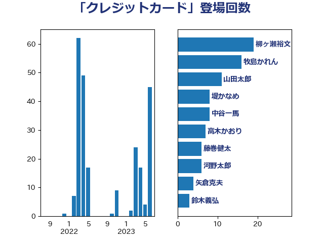

単語「クレジットカード」

| 牧島かれん | 自由民主党 | 16 回 |
| 白石洋一 | 立憲民主党 | 14 回 |
| 中谷一馬 | 立憲民主党 | 9 回 |
| 堤かなめ | 立憲民主党 | 7 回 |
| 高木かおり | 日本維新の会 | 6 回 |
| 梶山弘志 | 自由民主党 | 5 回 |
| 田島麻衣子 | 立憲民主党 | 4 回 |
| 矢倉克夫 | 公明党 | 4 回 |
| 下条みつ | 立憲民主党 | 3 回 |
| 太田房江 | 自由民主党 | 3 回 |
| 小泉進次郎 | 自由民主党 | 3 回 |
| 岸真紀子 | 立憲民主党 | 3 回 |
| 田村憲久 | 自由民主党 | 3 回 |
| 石井章 | 日本維新の会 | 3 回 |
| 串田誠一 | 日本維新の会 | 2 回 |
| 和田有一朗 | 日本維新の会 | 2 回 |
| 小林史明 | 自由民主党 | 2 回 |
| 平井卓也 | 自由民主党 | 2 回 |
| 平林晃 | 公明党 | 2 回 |
| 平沼正二郎 | 自由民主党 | 2 回 |
| 細田健一 | 自由民主党 | 2 回 |
| 鈴木俊一 | 自由民主党 | 2 回 |
| 音喜多駿 | 日本維新の会 | 2 回 |
| 黄川田仁志 | 自由民主党 | 2 回 |
| 上野通子 | 自由民主党 | 1 回 |
| 今井絵理子 | 自由民主党 | 1 回 |
| 伊佐進一 | 公明党 | 1 回 |
| 伊藤岳 | 日本共産党 | 1 回 |
| 伴野豊 | 立憲民主党 | 1 回 |
| 佐藤啓 | 自由民主党 | 1 回 |
| 古賀之士 | 立憲民主党 | 1 回 |
| 城井崇 | 立憲民主党 | 1 回 |
| 塩川鉄也 | 日本共産党 | 1 回 |
| 安江伸夫 | 公明党 | 1 回 |
| 寺田静 | 無所属 | 1 回 |
| 山井和則 | 立憲民主党 | 1 回 |
| 山谷えり子 | 自由民主党 | 1 回 |
| 岩田和親 | 自由民主党 | 1 回 |
| 川崎ひでと | 自由民主党 | 1 回 |
| 市村浩一郎 | 日本維新の会 | 1 回 |
| 平木大作 | 公明党 | 1 回 |
| 杉尾秀哉 | 立憲民主党 | 1 回 |
| 松沢成文 | 日本維新の会 | 1 回 |
| 柚木道義 | 立憲民主党 | 1 回 |
| 梅村聡 | 日本維新の会 | 1 回 |
| 森まさこ | 自由民主党 | 1 回 |
| 森屋宏 | 自由民主党 | 1 回 |
| 池下卓 | 日本維新の会 | 1 回 |
| 浅野哲 | 国民民主党 | 1 回 |
| 清水真人 | 自由民主党 | 1 回 |
| 漆間譲司 | 日本維新の会 | 1 回 |
| 片山さつき | 自由民主党 | 1 回 |
| 石橋林太郎 | 自由民主党 | 1 回 |
| 礒崎哲史 | 国民民主党 | 1 回 |
| 福島みずほ | 社会民主党 | 1 回 |
| 自見はなこ | 自由民主党 | 1 回 |
| 若松謙維 | 公明党 | 1 回 |
| 里見隆治 | 公明党 | 1 回 |
| 阿部弘樹 | 日本維新の会 | 1 回 |